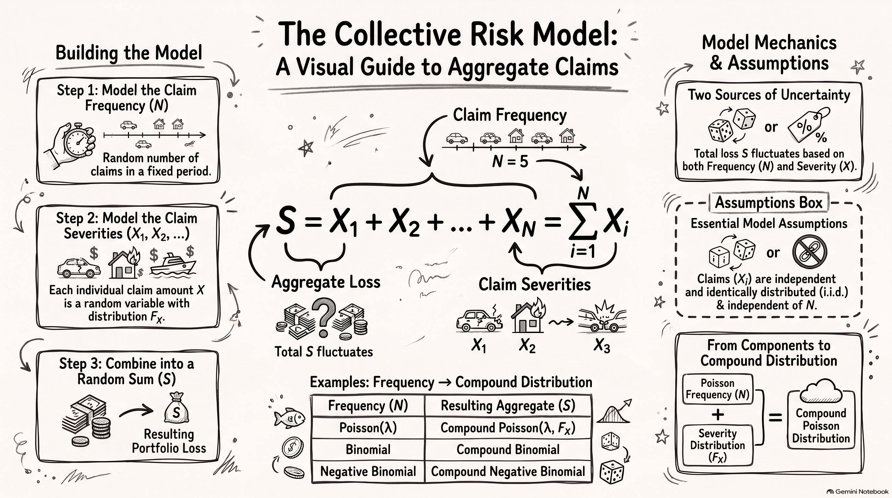
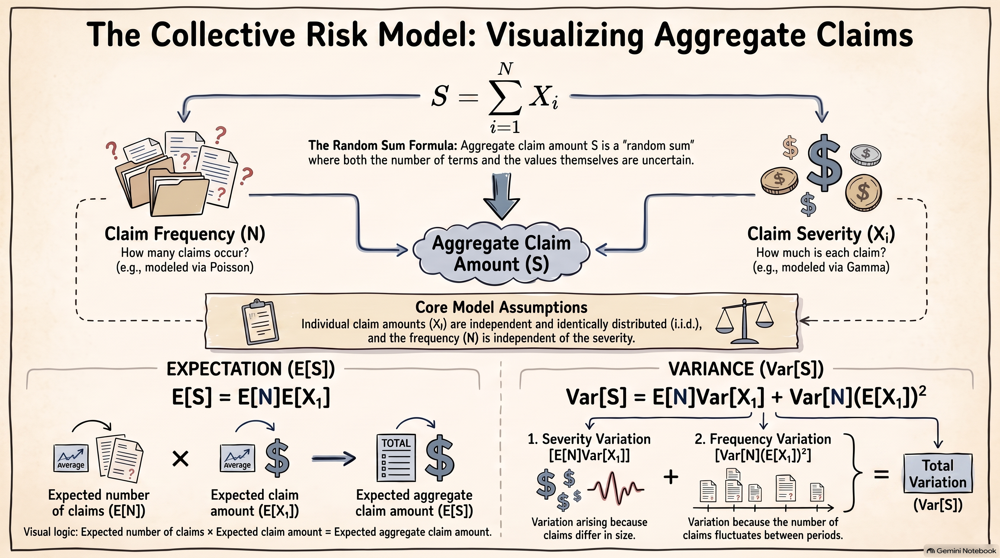
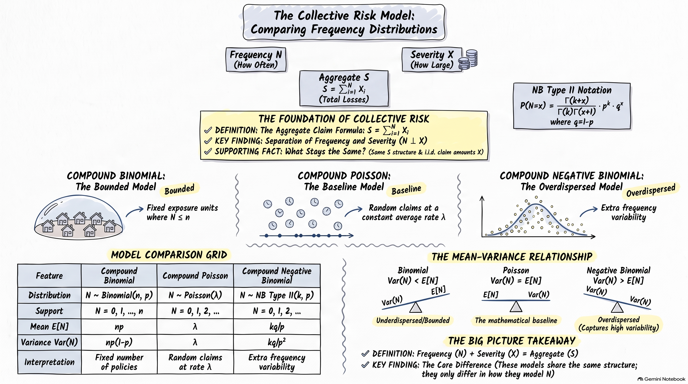

Mathematical models of the total amount of claims from a portfolio of policies over a short period of time are presented in this chapter. These models are referred to as short-term risk models. Two main sources of uncertainty are considered: the number of claims and the amounts of individual claims.
We begin with the collective risk model, which models the aggregate (total) amount of claims from a portfolio of policies over a fixed time interval.
3.1.1 Motivation and actuarial interpretation
Consider an insurance company that provides coverage to a portfolio of policyholders over a fixed period, such as one year. During this period, some policyholders may make claims while others may not. In addition, the amounts of the claims can vary substantially from one claim to another.
From the insurer’s perspective, the total amount that must be paid in claims is therefore uncertain. Even if the insurer knows the characteristics of the portfolio, it does not know in advance:
how many claims will occur during the period; and
how much each individual claim will cost.
For example, suppose an insurer has a portfolio of motor insurance policies. During one year, the portfolio may produce 800 claims, while another year may produce 950 claims. Furthermore, the individual claim amounts may range from relatively small claims to very large claims. Consequently, the total amount of claims can vary considerably from year to year.
The collective risk model separates these two sources of uncertainty. The claim frequency describes how many claims occur, while the claim severity describes the amount of an individual claim. These two components are then combined to obtain a model for the total amount of claims.
This distinction is important in actuarial modelling because the frequency and severity components can have quite different characteristics. For example, the number of claims may be modelled using a discrete probability distribution such as the Poisson distribution, whereas the amount of an individual claim may be modelled using a continuous distribution such as the Gamma, Lognormal, or Pareto distribution.
The collective risk model is therefore useful because it provides a flexible framework for combining a model for the number of claims with a model for the amount of each claim.
3.1.2 Frequency and severity variables
We define the following random variables:
\(N\) represents the number of claims occurring during a fixed time interval;
\(X_i\) denotes the amount of the \(i\)th claim; and
\(S\) denotes the total amount of claims during the same time interval.
The random variable \(N\) is called the claim frequency, while \(X_i\) is called the claim severity.
The claim frequency \(N\) is a discrete random variable taking values in
\[
\{0,1,2,\ldots\}.
\]
For a given value of \(N=n\), there are exactly \(n\) claims during the time interval. The total amount of these claims is therefore
\[
S = X_1 + X_2 + \cdots + X_n.
\]
The individual claim amounts \(X_1,X_2,\ldots\) are random because the amount of a claim is unknown before the claim occurs. We assume that the claim amounts are described by a common distribution function \(F_X\).
It is useful to distinguish clearly between the two sources of randomness:
The aggregate claim amount \(S\) depends on both components. A year with many claims can produce a large aggregate loss even when the individual claims are relatively small. Conversely, a year with relatively few claims can still produce a large aggregate loss if one or more claims are unusually large.
NoteTwo sources of uncertainty
In the collective risk model, the aggregate claim amount is uncertain because of two sources:
the number of claims, represented by \(N\); and
the amounts of individual claims, represented by \(X_1,X_2,\ldots\).
These two sources of uncertainty are combined through the random sum
\[
S = \sum_{i=1}^{N}X_i.
\]
3.1.3 Definition of the aggregate loss
Let \(S\) denote the total amount of claims from a portfolio during a fixed time interval. Conditional on \(N=n\), the aggregate loss is
\[
S = \sum_{i=1}^{n}X_i.
\]
Since the number of claims \(N\) is itself random, the unconditional aggregate loss is represented by the random sum
\[
S = \sum_{i=1}^{N}X_i.
\]
The random variable \(S\) is called the aggregate loss, aggregate claim amount, or total claim amount.
ImportantCollective risk model
The aggregate claim amount is modelled as
\[
S = \sum_{i=1}^{N}X_i,
\]
where \(N\) is the number of claims and \(X_i\) is the amount of the \(i\)th claim.
The number of terms in the sum is therefore random.
An important feature of this definition is that the number of terms in the sum is random. If \(N=0\), there are no claims and therefore
\[
S=0.
\]
If \(N=1\), then
\[
S=X_1,
\]
while if \(N=2\), then
\[
S=X_1+X_2.
\]
More generally, conditional on \(N=n\),
\[
S=\sum_{i=1}^{n}X_i.
\]
Thus, the collective risk model is a random sum model.
3.1.4 The collective risk model
The collective risk model is defined by
\[
S = \sum_{i=1}^{N}X_i,
\]
where \(N\) represents the number of claims and \(X_i\) represents the amount of the \(i\)th claim.

Figure 3.1: Collective Risk Model Visual Guide
The following assumptions are made when deriving the collective risk model:
\(\{X_i\}_{i=1}^{\infty}\) are independent and identically distributed with distribution function \(F_X\).
\(N\) is independent of \(\{X_i\}_{i=1}^{\infty}\).
The first assumption implies that all individual claim amounts have the same distribution and that the amount of one claim does not depend on the amount of another claim.
The second assumption implies that the number of claims is independent of the individual claim amounts. In other words, knowing that a portfolio has produced a large or small number of claims does not provide information about the sizes of those claims.
These assumptions are simplifying assumptions that allow the aggregate claim distribution to be studied using standard probability techniques. They may not always be realistic in practice. For example, claim frequency and claim severity may be related, or claims arising from the same event may not be independent. Nevertheless, the assumptions provide a useful starting point for developing short-term risk models.
WarningAssumptions of the collective risk model
The following assumptions are made:
\(\{X_i\}_{i=1}^{\infty}\) are independent and identically distributed with distribution function \(F_X\).
\(N\) is independent of \(\{X_i\}_{i=1}^{\infty}\).
These assumptions simplify the mathematical analysis of aggregate claims. In practice, they may not always be appropriate. For example, claim frequency and claim severity may be dependent, and claim amounts may not be independent.
Under these assumptions, the distribution of \(S\) is called a compound distribution.
The collective risk model can therefore be viewed as a combination of two probability models:
\[
\boxed{
\text{Claim frequency model}
+
\text{Claim severity model}
\longrightarrow
\text{Aggregate loss model}
}
\]
The choice of the distribution for \(N\) determines the type of compound distribution. Important examples include the following:
Distribution of \(N\)
Distribution of \(S\)
Binomial
Compound Binomial
Poisson
Compound Poisson
Negative binomial
Compound Negative Binomial
These compound distributions form an important part of short-term risk modelling.
NoteNote
The distribution of \(S\) can, in principle, be derived using convolution techniques. However, closed-form expressions for compound distributions generally do not exist. Therefore, we will mainly focus on deriving the moments of \(S\) and studying important special cases of the collective risk model.
The collective risk model provides the foundation for several actuarial applications. Once the aggregate loss distribution has been specified, it can be used to study quantities such as the expected total claims, the variability of total claims, the probability that claims exceed a specified amount, the effect of reinsurance, and premium calculation.
3.2 Conditional Expectation and Variance Formulas
Conditional expectation and conditional variance are useful tools for analysing the collective risk model. In particular, they allow us to calculate the mean and variance of an aggregate loss by conditioning on another random variable.

Figure 3.2: Conditional Expectation and Variance Formulas
The law of total expectation states that
\[
E[E[X\mid Y]] = E[X].
\]
This result allows the expectation of \(X\) to be calculated by first finding the conditional expectation of \(X\) given \(Y\).
The conditional variance of \(X\) given \(Y\) is defined as
The first term represents the average variation of \(X\) within the different values of \(Y\), while the second term represents the variation in the conditional means across the different values of \(Y\).
These formulas will be particularly useful when deriving the moments of the aggregate loss
These formulas allow an unconditional mean or variance to be obtained by first conditioning on another random variable.
Example 3.1 (Conditional claim amounts) Suppose an insurer classifies a portfolio of policyholders into three risk groups: Low, Medium, and High. A policyholder is selected at random, and the three risk groups are equally likely:
\[
P(L)=P(M)=P(H)=\frac{1}{3}.
\]
Depending on the risk group, the policyholder can experience one of two possible claim amounts. The possible claim amounts, in units of THB, are:
Risk group
Possible claim amounts (THB)
Low
\(1\), \(2\)
Medium
\(1\), \(5\)
High
\(1\), \(10\)
Assume that, conditional on the risk group, each of the two claim amounts is equally likely.
Let \(X\) denote the claim amount of the selected policyholder.
Find the distribution of \(X\).
Find \(E[X]\) and \(\operatorname{Var}[X]\).
Use the conditional expectation and conditional variance formulas to verify your results.
Solution
Distribution of \(X\)
The possible values of \(X\) are \(1\), \(2\), \(5\), and \(10\).
For example, the probability of a claim amount of \(1\) is
This agrees with the variance obtained directly from the distribution of \(X\).
NoteInterpretation
The law of total variance decomposes the uncertainty in the claim amount into two components:
\[
\operatorname{Var}[X]
=
\underbrace{E[\operatorname{Var}[X\mid Y]]}_{\text{variation within risk groups}}
+
\underbrace{\operatorname{Var}[E[X\mid Y]]}_{\text{variation between risk groups}}.
\]
The first component represents the average variability of claim amounts within the risk groups. The second component represents the variability in the average claim amounts across the risk groups. In this example, it reflects the differences in average claim amounts among the Low-, Medium-, and High-risk groups.
3.2.1 Application to the collective risk model
The same ideas will be used to analyse the aggregate claim amount
\[
S=\sum_{i=1}^{N}X_i.
\]
By conditioning on the number of claims \(N\), we can first analyse the aggregate claim amount when the number of claims is fixed:
These results will be used in the next section to derive the mean, variance, and higher moments of the collective risk model.
3.3 Moments of the Collective Risk Model
Recall that the aggregate claim amount in the collective risk model is
\[
S=\sum_{i=1}^{N}X_i,
\]
where \(N\) is the number of claims and \(X_i\) is the amount of the \(i\)th claim. We assume that \(\{X_i\}_{i=1}^{\infty}\) are independent and identically distributed and that \(N\) is independent of \(\{X_i\}_{i=1}^{\infty}\).
The moments of \(S\) can be derived by conditioning on \(N\). We first derive general expressions in terms of the moments of \(N\) and \(X\), before considering particular choices for the distribution of \(N\).
The first term represents the variability arising from individual claim amounts, while the second term represents the additional variability arising from the random number of claims.
3.3.3 Third central moment
To derive the coefficient of skewness, we first need the third central moment of \(S\).
Let
\[
\mu_X=E[X_1]=m_1,
\]
and define the second and third central moments of \(X_1\) by
Thus, the first three moments of the collective risk model can be expressed entirely in terms of the corresponding moments of the claim frequency \(N\) and claim severity \(X\).
The collective risk model can be viewed as a random sum:
\[
S=\sum_{i=1}^{N}X_i.
\]
Unlike an ordinary sum, the number of terms is itself random. Conditional on \(N=n\), the aggregate claim amount is the sum of exactly \(n\) individual claim amounts:
\[
S\mid(N=n)=\sum_{i=1}^{n}X_i.
\]
Thus, the collective risk model combines two sources of randomness:
the random number of claims, \(N\); and
the random claim amounts, \(X_1,X_2,\ldots\).
The general moment formulas above show how these two sources of uncertainty combine to determine the distributional characteristics of the aggregate claim amount \(S\).
The next step is to specify a distribution for \(N\). Important special cases arise when \(N\) follows a binomial, Poisson, or negative binomial distribution, leading respectively to the compound binomial, compound Poisson, and compound negative binomial models.
3.3.6 Moment Generating Function of the Collective Risk Model
The random-sum representation also allows us to derive the moment generating function (MGF) of the aggregate claim amount.
Example 3.2 (MGF of the Collective Risk Model) Show that
This result provides a general MGF formula for the collective risk model. Once the MGF of the claim frequency \(N\) and the MGF of the individual claim amount \(X\) are known, the MGF of the aggregate claim amount \(S\) can be obtained by substitution.
3.4 Special Compound Distributions
We now consider important special cases of the collective risk model obtained by specifying the distribution of the claim frequency \(N\).
We begin with the compound Poisson distribution, which is one of the most important models for aggregate claims in short-term insurance.
3.4.1 Compound Poisson Distribution
Suppose that the number of claims follows a Poisson distribution,
\[
N\sim\operatorname{Poisson}(\lambda),
\]
and that \(\{X_i\}_{i=1}^{\infty}\) are independent and identically distributed with distribution function \(F_X\), independently of \(N\). The aggregate claim amount is
\[
S=\sum_{i=1}^{N}X_i.
\]
We say that \(S\) has a compound Poisson distribution with parameters \(\lambda\) and \(F_X\), and write
\[
S\sim\mathcal{CP}(\lambda,F_X).
\]
ImportantCompound Poisson model
The compound Poisson model combines
a Poisson distribution for the number of claims, and
a severity distribution \(F_X\) for the amount of each claim.
The parameter \(\lambda\) represents the expected number of claims during the specified period.
The terminology compound distribution is used similarly for other frequency distributions. For example, if \(N\) has a negative binomial distribution, then \(S\) has a compound negative binomial distribution.
3.4.2 Moments of the Compound Poisson Distribution
Let
\[
m_k=E[X_1^k]
\]
denote the \(k\)th raw moment of the individual claim amount \(X_1\).
For a Poisson random variable,
\[
E[N]=\operatorname{Var}[N]=\lambda
\]
and its third central moment is
\[
E[(N-E[N])^3]=\lambda.
\]
These results can be substituted directly into the general formulas for the collective risk model.
Example 3.3 (Example: Moments of a Compound Poisson Distribution) Let
\[
S\sim\mathcal{CP}(\lambda,F_X).
\]
Show that
\(E[S]=\lambda m_1\);
\(\operatorname{Var}[S]=\lambda m_2\);
\(M_S(t)=\exp\{\lambda(M_X(t)-1)\}\);
the third central moment of \(S\) is \(\lambda m_3\), and hence \[
\operatorname{Sk}[S]
=
\frac{\lambda m_3}{(\lambda m_2)^{3/2}}.
\]
Solution
1. Mean
From the general result for the collective risk model,
The positive coefficient of skewness indicates that the aggregate claim amount is right-skewed. The relatively large value reflects the influence of the heavy-tailed Pareto claim severity distribution.
3.4.4 Simulation of a Compound Poisson Distribution
We can simulate observations from a compound Poisson distribution by first simulating the number of claims and then simulating the corresponding claim amounts.
Suppose
\[
N\sim\operatorname{Poisson}(\lambda)
\]
and
\[
X\sim\operatorname{Pa}(\alpha,\beta).
\]
For each simulated observation, generate \(N\) claim amounts and calculate their sum.
The corresponding sample estimates from the simulation should be reasonably close to these theoretical values, although they will vary from one simulation to another.
Code
mean(totalClaims)
[1] 3.327911
Code
var(totalClaims)
[1] 3.256079
Code
# install.packages("moments") # if requiredlibrary(moments)skewness(totalClaims)
[1] 1.362417
NoteSimulation and theory
Simulation results will not exactly equal the theoretical moments because the simulation is based on a finite number of observations. As the number of simulated observations increases, the sample moments should generally become closer to the corresponding theoretical values.
3.4.5 Additivity of Compound Poisson Distributions
An important property of the compound Poisson distribution is its additivity. The sum of independent compound Poisson random variables is itself a compound Poisson random variable.
Example 3.5 (Example: Additivity) Let \(S_1,\ldots,S_n\) be independent compound Poisson random variables, where
The compound Poisson model is widely used in aggregate loss modelling because it combines a simple and interpretable frequency model with an arbitrary claim severity distribution. It also has particularly simple expressions for its first three cumulants and is closed under addition of independent compound Poisson risks.
3.4.6 From Compound Poisson to Compound Negative Binomial
In the collective risk model,
\[
S=\sum_{i=1}^{N}X_i,
\]
the aggregate loss depends on two components:
the claim frequency\(N\);
the claim severity\(X\).
In the compound Poisson model, the number of claims is assumed to follow
\[
N\sim\operatorname{Poisson}(\lambda).
\]
The Poisson distribution has the important property
\[
E[N]=\operatorname{Var}(N)=\lambda.
\]
This means that the mean and variance of the claim count are necessarily equal.
Why Consider the Negative Binomial Distribution?
In practice, claim-count data can exhibit overdispersion, meaning that the observed variability in claim counts is greater than their average:
\[
\operatorname{Var}(N)>E[N].
\]
The Poisson model cannot represent this feature because it requires
\[
\operatorname{Var}(N)=E[N].
\]
A more flexible frequency model is therefore useful when the claim-count variance is substantially larger than the claim-count mean.
The Negative Binomial distribution provides one such model. Under the IFoA Type 2 convention,
\[
N\sim NB(k,p),
\]
where \(N\) represents the number of failures before the \(k\)th success.
Example 3.6 (Comparing Poisson and Negative Binomial Frequency Models) Consider a portfolio for which the claim number has been observed for 10,000 policy-years.
The observed claim-count data are summarised below.
Number of claims
Observed frequency
Proportion
0
8,959
0.8959
1
852
0.0852
2
160
0.0160
3
24
0.0024
4
5
0.0005
5+
0
0.0000
Total
10,000
1.0000
The sample mean and variance of the number of claims are
\[
\bar{N}=0.1264,
\qquad
s_N^2=0.1628.
\]
Notice that
\[
s_N^2>\bar{N}.
\]
Thus, the observed claim counts exhibit overdispersion.
Suppose we fit two candidate frequency models:
a Poisson distribution;
a Negative Binomial Type 2 distribution.
For the Poisson model,
\[
N\sim\operatorname{Poisson}(\lambda),
\]
so the method of moments estimate is
\[
\hat{\lambda}=\bar{N}=0.1264.
\]
For the Negative Binomial Type 2 model,
\[
N\sim NB(k,p),
\]
where \(N\) counts the number of failures before the \(k\)th success. Its moments are
Matching these moments to the sample mean and variance gives estimates of \(k\) and \(p\).
Using the fitted models, we can compare the estimated number of policy-years having each claim count with the observed frequencies.
Claims
Observed
Negative Binomial
Poisson
0
8,959
8,948.7
8,812.6
1
852
878.2
1,113.9
2
160
141.3
70.4
3
24
25.7
3.0
4
5
4.9
0.1
5+
0
1.2
0.0
Total
10,000
10,000
10,000
The two fitted models have the same estimated mean claim frequency,
\[
E[N]\approx0.1264,
\]
but they distribute the probability differently across the possible claim counts.
The Poisson model has
\[
\operatorname{Var}(N)=E[N],
\]
whereas the fitted Negative Binomial model allows
\[
\operatorname{Var}(N)>E[N].
\]
The difference is particularly visible in the estimated number of policy-years with one or more claims. The Negative Binomial model places more probability on claim counts above zero while allowing greater variability in the frequency distribution.
This example illustrates why the choice of frequency distribution matters before constructing the aggregate loss model.
In the following sections, we therefore develop the compound Negative Binomial distribution, in which the claim number follows a Negative Binomial Type 2 distribution and the claim amounts follow a separate severity distribution.
3.4.7 Compound Negative Binomial Distribution
Definition
In the collective risk model,
\[
S=\sum_{i=1}^{N}X_i,
\]
where \(N\) represents the number of claims and \(X_i\) represents the amount of the \(i\)th claim.
For the Negative Binomial Type 2 parameterisation used by the IFoA, let
\[
N\sim NB(k,p),
\]
where \(N\) counts the number of failures before the \(k\)th success. The parameters satisfy
This expression shows that aggregate skewness depends on both frequency and severity.
In particular:
the first term reflects skewness in the claim severity;
the second term reflects the interaction between frequency variation and severity variation;
the third term reflects the skewness of the negative binomial claim-count distribution.
Therefore, even when the severity distribution is relatively symmetric, the aggregate loss distribution can remain positively skewed because the claim-count distribution itself is overdispersed and right-skewed.
NoteRewriting \(\mu_{3,S}\) in Terms of Raw Moments
The formula for the third central moment of aggregate claims,
This raw-moment form is often more convenient in actuarial calculations because it uses the raw severity moments \(m_1\), \(m_2\), and \(m_3\) directly.
3.4.8 Worked Example
Example 3.7 (Compound Negative Binomial Model with Gamma Claim Amounts) Consider a compound negative binomial model in which the annual number of claims follows the Negative Binomial Type II distribution
\[
N\sim NB(k,p),
\]
with
\[
k=4,
\qquad
p=0.5,
\qquad
q=1-p=0.5.
\]
Suppose the individual claim amounts are independent of \(N\) and have a Gamma distribution with shape parameter \(2\) and rate parameter \(0.002\):
\[
X_i\sim\operatorname{Gamma}(2,0.002).
\]
The aggregate claims are given by
\[
S=\sum_{i=1}^{N}X_i.
\]
We want to derive \(E[X]\) and \(\operatorname{Var}(S)\).
Solution
Using the shape-rate parameterisation, the first two moments of the claim severity are
This example illustrates the two levels of variability in the compound model. The number of claims varies from year to year, and the individual claim amounts also vary from claim to claim. Both sources contribute to the variability of aggregate claims.
3.4.9 Simulation of the Compound Negative Binomial Model
The compound negative binomial model can be simulated in two stages.
First, simulate the annual number of claims:
\[
N\sim NB(k,p).
\]
Then, conditional on the simulated value of \(N\), generate the individual claim amounts:
The claim counts can be simulated using rnbinom(). In R, the arguments size and prob correspond to \(k\) and \(p\) in the Negative Binomial Type 2 parameterisation used here.
Code
N <-rnbinom( n_sim,size = k,prob = p)
Thus, each element of N represents the number of claims in one simulated insurance year.
The claim amounts can then be generated conditional on the simulated number of claims. For each year, we generate the required number of Gamma claim amounts and add them together.
The simulation produces a sample from the compound negative binomial distribution rather than directly generating aggregate losses from a single standard distribution.
Simulated Claim Numbers
The simulated claim counts can be displayed using a histogram.
Measure Simulation Theory
1 Mean 3926.812 4e+03
2 Variance 9437849.182 1e+07
For the theoretical model,
\[
E[S]=4{,}000
\]
and
\[
\operatorname{Var}(S)=10{,}000{,}000.
\]
With \(5{,}000\) simulated insurance years, the simulated mean and variance will generally not be exactly equal to these values. They should, however, be reasonably close.
For example, using the simulation with set.seed(123) gives approximately:
Measure
Simulation
Theory
Mean
3,926.8
4,000
Variance
9,437,849.2
10,000,000
The differences are due to simulation variability. The theoretical quantities describe the distribution of the aggregate loss, whereas the simulated quantities are calculated from a finite sample of \(5{,}000\) simulated insurance years.
Increasing the number of simulated years would generally make the simulation results more stable and closer to the theoretical values.
The simulation therefore provides a numerical illustration of the compound negative binomial formulas:
Insurance companies are often interested not only in the claim amount arising from a single policy, but in the total amount of claims generated by an entire portfolio during a specified period.
Consider a portfolio of \(n\) independent and identical policies. Suppose that, during the period under consideration, each policy can produce at most one claim.
For each policy, there are therefore two possible outcomes:
the policy produces no claim;
the policy produces one claim.
Let \(p\) denote the probability that a particular policy produces a claim. Then the probability of no claim is \(1-p\).
If \(N\) denotes the total number of claims in the portfolio, then
\[
N\sim\operatorname{Binomial}(n,p).
\]
The binomial distribution is therefore a natural frequency model when there is a fixed number of potential claim events and each potential event can occur at most once.
The aggregate claim amount, however, depends not only on how many claims occur but also on the amount of each claim. This leads to the compound binomial model.
Why the Binomial Distribution?
The binomial frequency model is appropriate when the following assumptions are reasonable:
There are a fixed number \(n\) of policies or potential claim events.
Each policy can produce at most one claim during the period.
Each policy has the same probability \(p\) of producing a claim.
Claim events for different policies are independent.
An important feature of this model is that the number of claims has a fixed upper bound:
\[
0\leq N\leq n.
\]
For example, if there are \(1{,}000\) policies, there cannot be more than \(1{,}000\) claims under the assumption that each policy can produce at most one claim.
Frequency and Severity
The random variable \(N\) describes the frequency of claims: how many claims occur.
To describe the total amount paid, we also need a severity model.
Let
\[
X_i
\]
denote the amount of the \(i\)th claim. Assume that
\[
X_1,X_2,\ldots
\]
are i.i.d. and independent of \(N\).
The aggregate claim amount is then
\[
S=\sum_{i=1}^{N}X_i.
\]
The number of terms in this sum is random because \(N\) is random.
For example:
if \(N=0\), then \(S=0\);
if \(N=1\), then \(S=X_1\);
if \(N=2\), then \(S=X_1+X_2\);
if \(N=3\), then \(S=X_1+X_2+X_3\).
Thus, the aggregate loss is a random sum.
This gives the basic structure of the collective risk model:
The frequency component determines how many claims occur, while the severity component determines how much each claim costs.
3.4.11 The Compound Binomial Model
Definition
Suppose that
\[
N\sim\operatorname{Binomial}(n,p),
\]
and that the claim amounts
\[
X_1,X_2,\ldots
\]
are i.i.d. and independent of \(N\).
The aggregate claim amount
\[
\boxed{
S=\sum_{i=1}^{N}X_i
}
\]
is said to have a compound binomial distribution.
We may write
\[
\boxed{
S\sim\mathcal{CB}(n,p,F_X),
}
\]
where \(F_X\) denotes the distribution of an individual claim amount.
The three quantities \((n,p,F_X)\) therefore determine the model:
\(n\) describes the number of potential claim events;
\(p\) describes the probability of a claim for each policy;
\(F_X\) describes the distribution of the amount of an individual claim.
Conditional Interpretation
A useful way to understand the compound binomial distribution is to condition on the number of claims.
If
\[
N=k,
\]
then the aggregate claim amount is
\[
S=X_1+\cdots+X_k.
\]
Therefore, conditional on \(N=k\), the aggregate loss is the sum of \(k\) independent severity variables.
In particular,
\[
S\mid N=k
\overset{d}{=}
X_1+\cdots+X_k.
\]
Consequently, the distribution of \(S\) can be viewed as a mixture of the distributions corresponding to different possible values of \(N\).
This is the origin of the word compound: the aggregate distribution is constructed by combining the frequency distribution with the severity distribution.
Probability of Zero Claims
The binomial frequency model also gives an immediate expression for the probability of no claims:
\[
P(N=0)
=
(1-p)^n.
\]
If claim amounts are strictly positive, then
\[
S=0
\quad\Longleftrightarrow\quad
N=0.
\]
Therefore,
\[
\boxed{
P(S=0)=(1-p)^n.
}
\]
This is an important difference between an aggregate loss distribution and an individual claim-size distribution. The aggregate loss has a point mass at zero because the portfolio may experience no claims during the period.
Moments of the Aggregate Loss
Mean
For a random sum
\[
S=\sum_{i=1}^{N}X_i,
\]
where \(N\) is independent of the severity variables, the expected value is
This result has a particularly simple interpretation:
\[
\boxed{
E[S]
=
\underbrace{np}_{\text{expected number of claims}}
\underbrace{m_1}_{\text{expected claim amount}}.
}
\]
Thus, the expected aggregate loss is the expected number of claims multiplied by the expected amount of an individual claim.
For example, suppose
\[
n=10{,}000,
\qquad
p=0.02,
\]
and
\[
E[X]=50{,}000.
\]
Then the expected number of claims is
\[
E[N]=10{,}000(0.02)=200,
\]
and consequently
\[
E[S]
=
200(50{,}000)
=
10{,}000{,}000.
\]
The expected aggregate loss is therefore \(10\) million.
The calculation illustrates an important modelling principle: the mean aggregate loss can be understood through the two separate components of the model.
This decomposition is one of the most useful ways to interpret the variance of a collective risk model.
Third Central Moment and Coefficient of Skewness
The mean and variance describe the centre and spread of the aggregate loss distribution. However, insurance loss distributions are often asymmetric, with a relatively long right tail.
The coefficient of skewness measures this asymmetry.
There is approximately a \(36.6%\) probability that the portfolio generates no claims during the period.
3.4.13 Simulation of the Collective Risk Model
The collective risk model can be studied not only through analytical calculations but also through simulation. Simulation allows us to generate many possible insurance years and use the simulated aggregate losses to approximate quantities such as the mean, variance, and distribution of the aggregate claim amount.
Consider the compound binomial model
\[
N\sim\operatorname{Binomial}(100,0.01),
\]
where \(N\) represents the number of claims during one year, and suppose that the individual claim amounts are independent and identically distributed as
The vector S contains \(B=100{,}000\) simulated aggregate losses.
Each element of S represents one possible outcome of
\[
S=\sum_{i=1}^{N}X_i.
\]
Notice that the number of Gamma random variables generated is different from one simulated year to another because the number of claims \(N\) is itself random.
Visualising the Simulated Aggregate Losses
The simulated values of \(S\) can be displayed using a histogram.
The small differences arise because the simulation is based on a finite number of simulated insurance years. Increasing \(B\) generally makes the simulated estimates closer to the theoretical values.
NoteSimulation and theory
Simulation does not replace the theoretical formulas. Instead, it provides a numerical way to verify and explore the model.
This agreement provides a useful check that the simulation has been implemented correctly.
3.4.14 From the Compound Binomial Model to the General Collective Risk Model
The compound binomial distribution is an important special case of the general collective risk model
\[
S=\sum_{i=1}^{N}X_i.
\]
The general structure remains the same:
\[
\boxed{
S
=
\underbrace{\sum_{i=1}^{N}}_{\text{random number of claims}}
\underbrace{X_i}_{\text{claim severity}}.
}
\]
What changes from one compound model to another is the distribution chosen for \(N\).
For the compound binomial model,
\[
N\sim\operatorname{Binomial}(n,p),
\]
so there is a fixed maximum number of claims:
\[
N\leq n.
\]
This makes the compound binomial model particularly suitable for portfolios in which each individual policy can generate at most one claim.
In contrast, if a policy can generate multiple claims during the period, a different frequency model, such as the Poisson or negative binomial distribution, may be more appropriate.
The compound binomial model therefore provides an important bridge between individual-policy modelling and the broader collective risk model.
Summary
The compound binomial model combines a binomial frequency distribution with a severity distribution.
This same framework will be used for other compound distributions, with the principal difference being the choice of the frequency distribution \(N\).
3.4.15 Comparing the Three Frequency Models
The compound binomial, compound Poisson, and compound negative binomial models all describe aggregate claim amounts through the same basic structure,
\[
S=\sum_{i=1}^{N}X_i,
\]
but they use different models for the number of claims \(N\).
The choice of frequency distribution determines how the model represents the number of claims that may occur during the observation period.
Model
Frequency distribution
Support of \(N\)
Typical interpretation
Compound Binomial
\(\operatorname{Binomial}(n,p)\)
\(0,\ldots,n\)
A fixed number of policies, each with a limited probability of producing a claim
Compound Poisson
\(\operatorname{Poisson}(\lambda)\)
\(0,1,2,\ldots\)
Claims occur independently at an approximately constant average rate
Compound Negative Binomial
\(\operatorname{NB}(k,p)\)
\(0,1,2,\ldots\)
Claim counts exhibit greater variability than a Poisson model
The severity distribution \(F_X\) can be chosen separately from the frequency model. Thus, the same claim severity distribution can be used with all three models.

Figure 3.3: Comparison of the Three Collective Risk Frequency Distributions
Compound Binomial
The compound binomial model is particularly natural when there is a fixed number of exposure units, such as a portfolio containing \(n\) insurance policies, and each policy can produce at most one claim during the period.
For example, suppose that 1,000 policies are observed for one year and each policy has probability \(0.01\) of producing a claim. Then
\[
N\sim\operatorname{Binomial}(1000,0.01).
\]
The model has a natural upper bound:
\[
N\leq n.
\]
This can be an important feature when the underlying insurance mechanism really does impose such a limit.
Limitation: the binomial model assumes a fixed number of independent exposure units with the same claim probability. It is therefore less suitable when the number of potential claims is not naturally bounded or when claim events arise through a process rather than through a fixed collection of policies.
Compound Poisson
The compound Poisson model is one of the most widely used frequency models in collective risk modelling.
It assumes that the number of claims follows
\[
N\sim\operatorname{Poisson}(\lambda).
\]
The model is appropriate when claims can be viewed as occurring independently over the period at an approximately constant average rate. There is no fixed upper bound on the number of claims.
For example, the number of reported motor insurance claims in a portfolio during a year may be modelled using a Poisson distribution when the usual Poisson assumptions provide a reasonable approximation.
One reason for the importance of the compound Poisson model is its mathematical simplicity. It provides a convenient starting point for modelling aggregate losses and has particularly simple moment and cumulant properties.
Limitation: the Poisson distribution imposes the restriction
\[
E[N]=\operatorname{Var}(N).
\]
Consequently, if the observed claim counts show substantially greater variability than their mean, the Poisson model may not provide an adequate representation of the frequency distribution.
Compound Negative Binomial
The compound negative binomial model provides an alternative when the claim count is more variable than would be expected under a Poisson model.
In particular, the negative binomial distribution can accommodate
\[
\operatorname{Var}(N)>E[N].
\]
This feature makes the model useful when there is overdispersion in the claim counts.
For example, different policyholders may have different underlying risks. Even if claims are approximately Poisson conditional on an underlying risk level, variation in risk between policyholders or groups can produce greater overall variability in the observed claim count. A negative binomial model can capture some of this additional variation.
Limitation: the negative binomial model introduces additional parameters and assumptions compared with the Poisson model. It is therefore more flexible, but the extra flexibility should be supported by the data and the modelling context.
Choosing Between the Models
The three models can therefore be viewed as representing different levels of modelling structure.
Question
Compound Binomial
Compound Poisson
Compound Negative Binomial
Is the number of possible claims naturally bounded?
Yes
No
No
Is there a fixed number of exposure units?
Natural setting
Not required
Not required
Is the Poisson assumption plausible?
Not the main issue
Yes
Not necessarily
Can the model accommodate overdispersion?
Depending on parameters
No
Yes
Main modelling idea
Fixed opportunities for claims
Random claims at an average rate
Extra variability in claim counts
The choice of model should therefore be guided by the insurance mechanism and the observed claim-count data, rather than by the mathematical convenience of a particular distribution.
NoteA useful way to think about the three models
The three models answer slightly different questions about the claim frequency:
Compound Binomial:How many of a fixed number of opportunities result in a claim?
Compound Poisson:How many claims occur when claims arrive at an approximately constant average rate?
Compound Negative Binomial:How many claims occur when the claim count has more variability than a Poisson model can accommodate?
The severity model then determines how large those claims are.
The Role of the Severity Distribution
It is important to distinguish the frequency model from the severity model.
The three models above differ in their assumptions about \(N\), but they can use the same distribution for the individual claim amounts \(X_i\).
For example, we could have
\[
X_i\sim\operatorname{Gamma}(20,0.1)
\]
under any of the three frequency models.
Thus, the collective risk model has two separate modelling decisions:
The frequency model describes how often claims occur, while the severity model describes how large the claims are.
This distinction becomes particularly important when interpreting insurance data. A model may fit the claim frequency well but fit the claim severity poorly, or vice versa.
3.5 Reinsurance in the Collective Risk Model
3.5.1 Motivation for Reinsurance
The collective risk model describes the total claims arising from a portfolio during a specified period as
\[
S=\sum_{i=1}^{N}X_i,
\]
where \(N\) is the number of claims and \(X_i\) is the amount of the \(i\)th claim.
Although the collective risk model allows an insurer to quantify its aggregate claims, the resulting loss can be highly uncertain. In particular, a small number of large claims may produce a substantial aggregate loss during the period.
Reinsurance provides a mechanism through which an insurer transfers part of its claim risk to another insurer, called the reinsurer. In return, the insurer pays a reinsurance premium.
The purpose of reinsurance is therefore not to eliminate claims, but to share the financial consequences of claims between the insurer and the reinsurer.
Let
\[
S
\]
denote the original aggregate claim amount. After reinsurance, let
\[
S_I
\]
denote the aggregate amount paid by the insurer and
\[
S_R
\]
denote the aggregate amount paid by the reinsurer.
The payments must satisfy
\[
\boxed{S=S_I+S_R}.
\]
Thus, the original aggregate claim is divided between the two parties.
The way in which this division is made depends on the reinsurance arrangement.
Two important forms of reinsurance considered in the collective risk model are:
Proportional reinsurance, where the insurer and reinsurer share every claim according to fixed proportions.
Individual excess-of-loss reinsurance, where the reinsurer covers the part of an individual claim exceeding a specified retention level.
These two arrangements lead to different transformations of the individual claim amount \(X\) and, consequently, different aggregate-loss distributions.
3.5.2 Proportional Reinsurance
Under proportional reinsurance, the insurer retains a fixed proportion \(\alpha\) of every claim, where
An important feature of proportional reinsurance is that both parties contribute to every claim. The insurer always pays the same proportion \(\alpha\) of the claim, while the reinsurer always pays the remaining proportion \(1-\alpha\).
Unless an additional limit is imposed, both parties therefore have liability for claims of any size.
The aggregate claims paid by the insurer and reinsurer are consequently scaled versions of the original aggregate claims.
NoteKey Idea
Proportional reinsurance does not change the number of claims \(N\). Instead, it changes how the amount of each claim \(X_i\) is allocated between the insurer and the reinsurer.
Thus, reinsurance can be incorporated into the collective risk model by transforming the individual claim amounts before constructing the aggregate loss.
3.5.3 Effect on the Collective Risk Model
The proportional reinsurance arrangement can also be viewed at the individual-claim level.
Originally,
\[
S=\sum_{i=1}^{N}X_i.
\]
After proportional reinsurance, the insurer’s individual claim amount is
\[
Y_i=\alpha X_i.
\]
Therefore,
\[
S_I=\sum_{i=1}^{N}Y_i.
\]
The collective risk model has not changed in terms of the claim frequency \(N\). Instead, the severity distribution has been transformed from \(X\) to \(Y=\alpha X\).
Similarly, the reinsurer’s aggregate claims are generated by the transformed severity
This provides an important general principle for reinsurance:
Reinsurance can be incorporated into the collective risk model by transforming the individual claim amounts and then applying the collective model to the transformed severity distribution.
For proportional reinsurance, the transformation is particularly simple because it is just a scaling transformation.
These results show that proportional reinsurance reduces the insurer’s aggregate-loss variance by a factor of \(\alpha^2\).
However, there is an important point concerning the relationship between the insurer and reinsurer.
Since
\[
S_I=\alpha S
\qquad\text{and}\qquad
S_R=(1-\alpha)S,
\]
the two aggregate losses are not independent. They are perfectly positively dependent because both are determined by the same original aggregate loss \(S\).
This covariance term will be important when decomposing the original aggregate risk between the insurer and reinsurer.
3.5.5 Worked Example
Example 3.9 (Aggregate Claims under Proportional Reinsurance) Suppose aggregate claims follow a compound Poisson model with
\[
N\sim\operatorname{Poisson}(10)
\]
and individual claim amounts
\[
X\sim Pa(4,1),
\]
where the Pareto distribution is parameterised by shape \(\alpha\) and scale \(\lambda\).
The insurer purchases proportional reinsurance with retention \(\alpha_R=0.8\). Thus, the insurer retains \(80%\) of every claim and the reinsurer pays the remaining \(20%\).
Let \(S\) denote the original aggregate claims, \(S_I\) the aggregate claims paid by the insurer, and \(S_R\) the aggregate claims paid by the reinsurer.
Find:
the distributions of \(S_I\) and \(S_R\);
\(E[S_I]\) and \(E[S_R]\);
\(\operatorname{Var}(S_I)\) and \(\operatorname{Var}(S_R)\);
compare \(\operatorname{Var}(S_I)+\operatorname{Var}(S_R)\) with \(\operatorname{Var}(S)\);
explain why the two variances do not add to the original aggregate variance.
Solution
The original aggregate claim amount is
\[
S=\sum_{i=1}^{N}X_i.
\]
Under proportional reinsurance with retention \(\alpha_R=0.8\),
Because the claim frequency \(N\) remains unchanged, both \(S_I\) and \(S_R\) are compound Poisson aggregate claims with transformed severity distributions.
Proportional reinsurance provides the simplest introduction to reinsurance because the insurer’s and reinsurer’s payments are obtained by simply scaling the original claim amount.
The next question is whether the insurer can instead protect itself specifically against large individual claims.
This leads to individual excess-of-loss reinsurance.
Under an excess-of-loss arrangement with retention \(M\), the insurer pays
\[
X_I=\min(X,M),
\]
while the reinsurer pays
\[
X_R=(X-M)_+.
\]
Thus,
\[
X=X_I+X_R.
\]
At the aggregate level,
\[
S_I=\sum_{i=1}^{N}\min(X_i,M),
\]
and
\[
S_R=\sum_{i=1}^{N}(X_i-M)_+.
\]
Unlike proportional reinsurance, the transformation is no longer a simple scaling of \(X\). This makes the analysis of the transformed severity distribution and its moments more interesting.
The two forms of reinsurance can therefore be viewed as two different ways of transforming individual claim amounts: